Кто-то живёт в твоём телефоне
Детский тамагочи про робота-малыша. Он ходит вперевалку, пищит своим голосом, падает и смешно встаёт, а ребёнок кормит его, моет, укладывает спать и обставляет ему убежище внутри телефона.
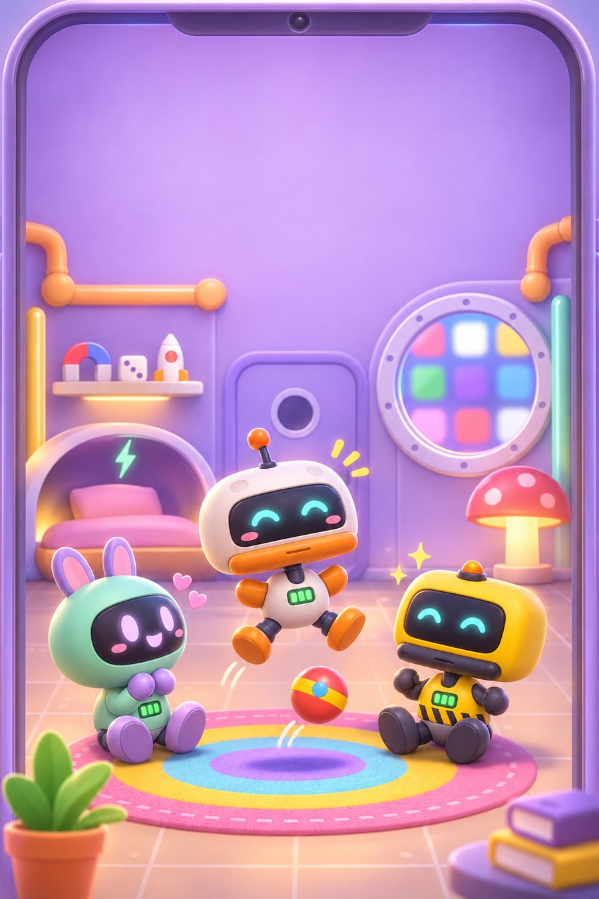
Открывается по ссылке на телефоне и ставится как приложение на Android (APK 0,26 МБ). Вся графика и анимация рисуются кодом, звуки синтезируются, поэтому все 20 роботов уже живут в одном движке и отличаются только набором параметров.
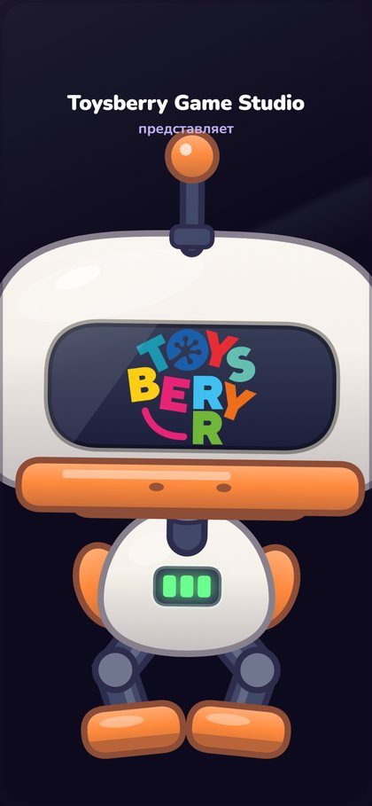
Заставка: логотип студии загорается на лице робота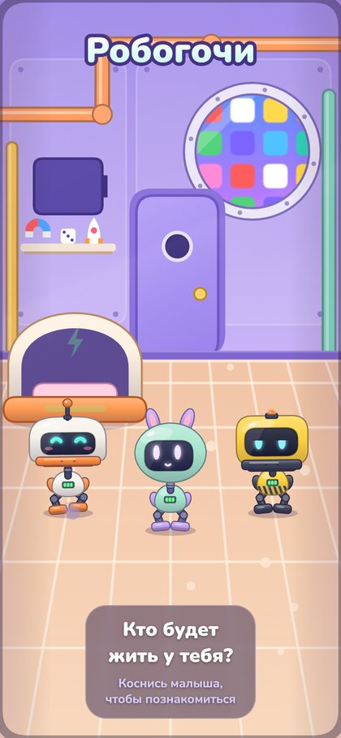
Выбор малыша из трёх и имя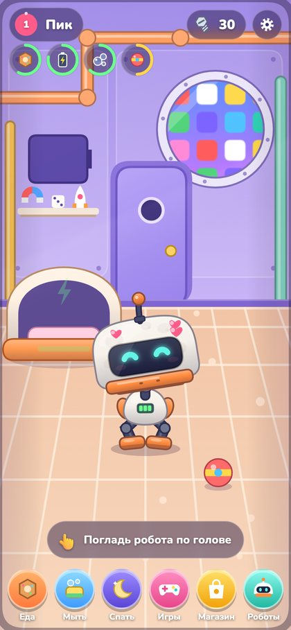
Гладишь по голове: жмурится, урчит, сердечки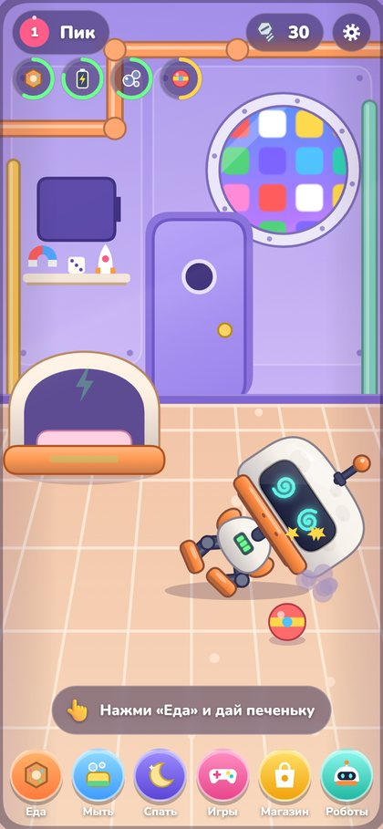
Затыкал много раз: падает, кружится голова, встаёт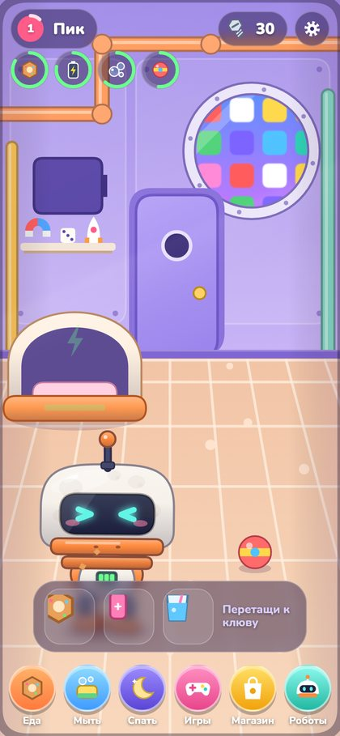
Тащишь печеньку к клюву: открывает, хрустит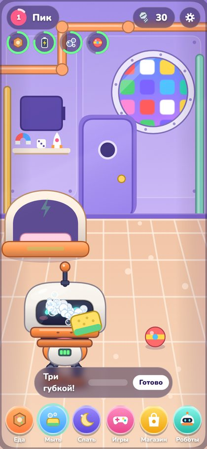
Трёшь губкой: пена, хихикает, отряхивается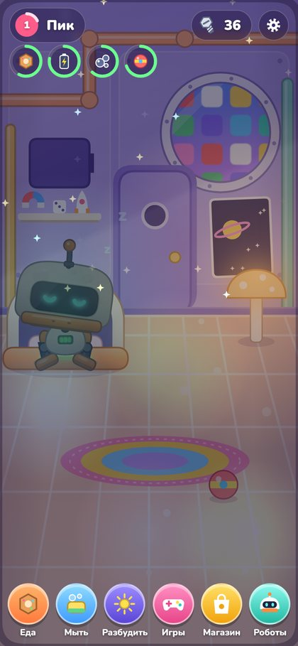
Спит в доке и заряжается, на стене звёзды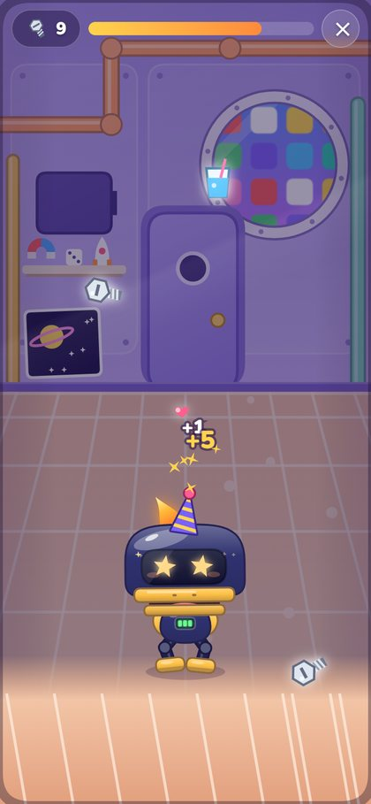
«Лови винтики»: водишь робота пальцем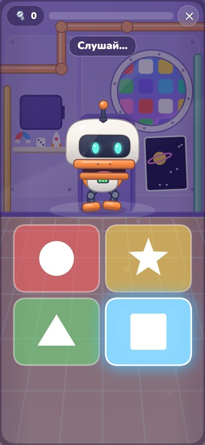
«Пи-пи-повтори»: робот пищит, ты повторяешь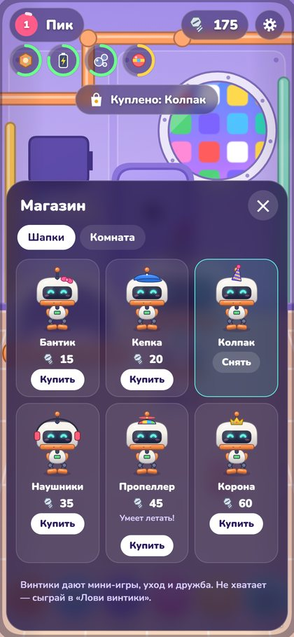
Шапки и мебель за винтики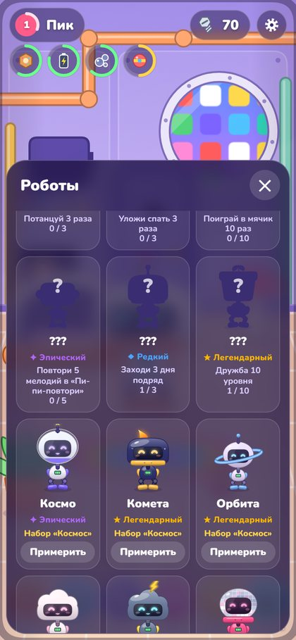
Коллекция: условия открытия и наборы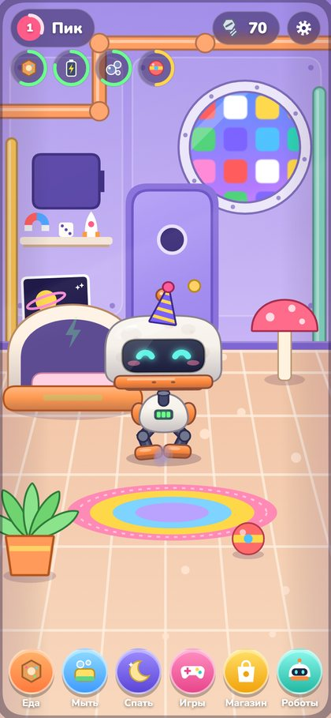
Убежище: коврик, ночник, цветок, постерЕда, мытьё, сон и игра. Четыре шкалы, батарейка на пузике робота. Робот сам показывает облачком, чего хочет. Не умирает и не портится.
Ходит, переставляя ноги по полу, качается, ловит равновесие, спотыкается. 12 выражений лица, моргание, взгляд за пальцем. Каждый робот пищит своим голосом.
Погладить, тыкнуть, пощекотать живот, поднять и уронить, постучать по стеклу (робот отвечает тем же ритмом), бросить мячик (робот бежит пинать).
Жанр огромный, но его хиты держатся на одной фирменной фишке. Детских приложений про роботов немного, и почти все они про сборку, а не про уход. Крупного хита «робот-питомец для 5–9 лет» в поиске 12 ноября не нашлось. Ниша выглядит свободной, хотя спрос на неё пока не доказан.
| Игра | Масштаб (Google Play) | Деньги | Чем держит |
|---|---|---|---|
| Pou | 1 млрд+ | Реклама, монеты | Простейший цикл: покормить, помыть, уложить, мини-игры за монеты |
| My Talking Tom 2 | 1 млрд+ | Реклама, покупки, подписка | Повторяет голос писклявым голосом, навыки открывают анимации |
| Bubbu | 100 млн+ | Реклама, покупки | 30+ мини-игр, мебель, «профессии» |
| Toca Boca World | 100 млн+ | Бесплатная база, платные наборы, без рекламы | Свобода без правил, по пятницам бесплатная посылка |
| Neko Atsume | 10 млн+ | Реклама, рыбки | Ставишь вещь, приходит гость. Редкие гости только на свои вещи |
| Finch | 10 млн+ | Подписка, без рекламы | Питомец уходит в поход и вечером возвращается с историей |
| Sago Mini Robot Party, Tinybop Robot Factory | нет данных | Подписка / разовая покупка | Собери робота и посмотри, как он оживёт. Ухода нет |
Пороги скачиваний сняты со страниц Google Play 12.11.2026. Полный разбор со ссылками: research/market-v2.md и research/analogues.md.
Те самые утята из твоего Shorts с NVIDIA GTC Berlin: рост 25 см, ходят вперевалку, берут вещи клювом, встают после падений, у каждого свой голос. Отсюда утиный клюв, походка с переносом веса и падение как фирменный жест.
Анимации ставил аниматор из Pixar. Вывод: выразительность держится на глазах и паузах, у каждой реакции несколько вариантов, неудача тоже повод для эмоции.
Разные реакции на голову, спину и живот. Eilik боится, когда его поднимают, у EMO больше 1000 мелких выражений. У нас уже есть зоны касания и реакция на подъём.
Фишка игры: малыш, который падает и встаёт и пищит тебе в ответ. Грусть робота никогда не ведёт в магазин. Возвращаем подарками, а не наказанием.
Общая ДНК: огромная голова-кепка с экраном вместо лица, светящиеся глаза, маленькое тельце с батарейкой на пузике, коротенькие ножки и большие ботинки. У половины утиный клюв от Microduck. Остальные отличаются формой головы: капля, облако, горшок, кристалл, планета.
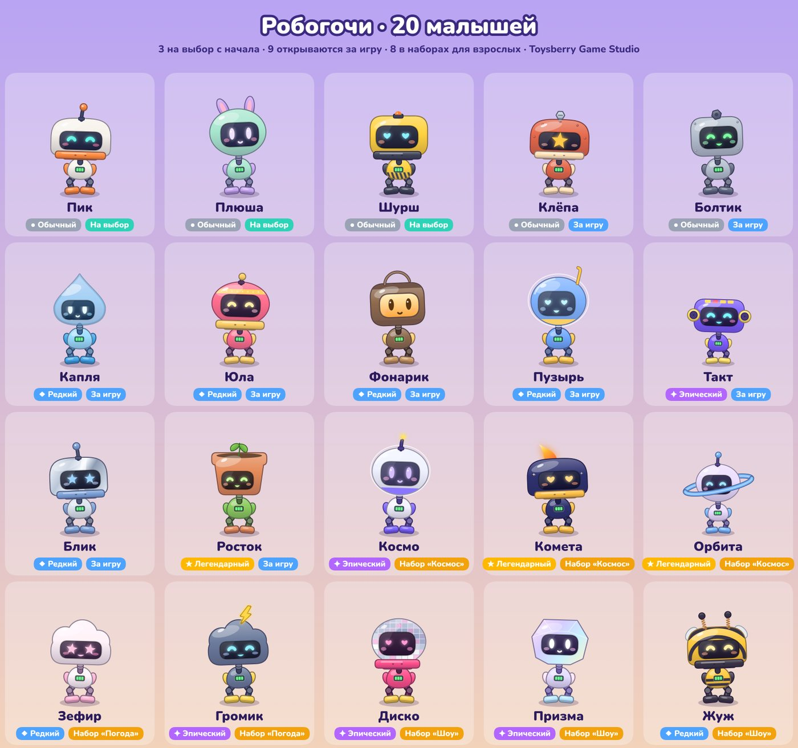
Ребёнок выбирает одного на старте, двое других доступны в коллекции сразу.
Открываются за дела: «искупай 5 раз», «повтори 5 мелодий», «дружба 10 уровня». Условие и прогресс видны на карточке.
Премиум-наборы с персонажами и декором. Игровой силы не дают, только характер, вид и сценки.
Редкость показана значком, словом и цветом сразу: ● обычный, ◆ редкий, ✦ эпический, ★ легендарный. Редкость выражается в анимации, а не в силе.
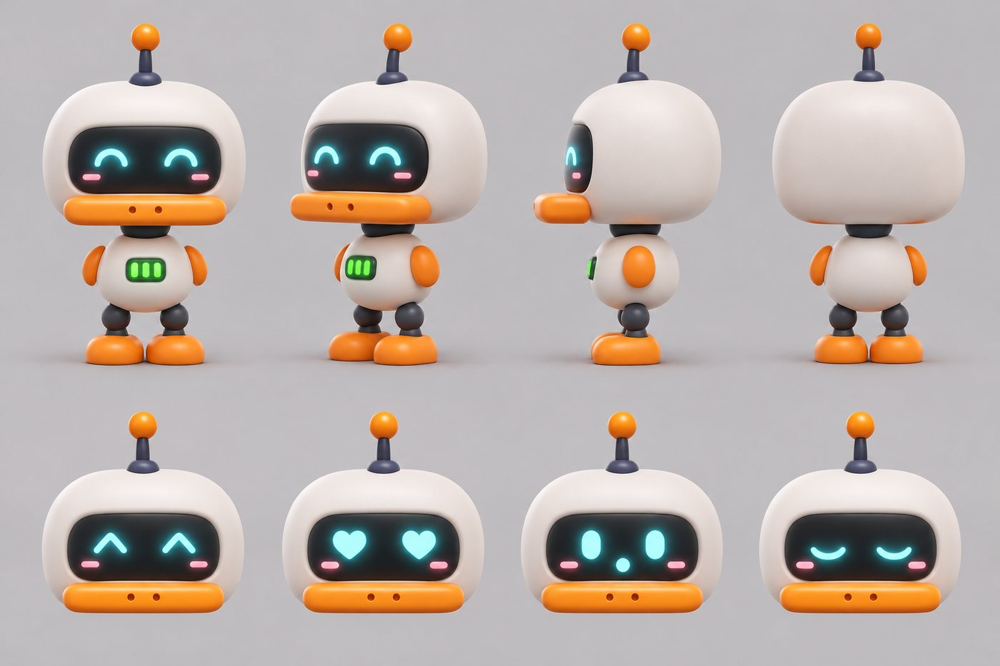
Уход и живые реакции. Ребёнок заходит проверить малыша, гладит, кормит, стучит по стеклу. Держит любопытство: что он сегодня выкинет.
Прототип сделан по этому варианту.
Модули меняют поведение: пропеллер даёт полёт (уже в прототипе), магнит на клюв даёт трюк с деталями, проектор показывает созвездия. Покупка видна сразу: робот пробует новую вещь.
Как в Neko Atsume: вещь в убежище зовёт робота-гостя, подружишься и он откроется. Как в Finch: утром заряжаешь, он уходит «по проводам телефона» и возвращается с открыткой и деталью.
Каждое действие даёт очки дружбы. Уровень открывает новые трюки, подарки и роботов. В прототипе уже есть уровни с праздником и наградой.
Коврик зовёт танцевать, ночник светит ночью, цветок робот нюхает, проектор рисует звёзды. Любая вещь меняет то, что малыш делает сам.
Девять роботов открываются за дела, у каждого виден прогресс. Свой голос, свой фирменный трюк, общий дом.
Пока тебя не было, робот нашёл винтики (уже в прототипе). Дальше: поход с открыткой, недельная посылка, первые три дня робот «знакомится» и каждый день показывает новый жест.
В каждом роботе живёт маленький ИИ. Он работает только в телефоне, без интернета, и месяцами учится у своего ребёнка: словам, игрушкам, именам, ритмам, танцам. Через полгода у ребёнка свой ИИ-персонаж, которого больше ни у кого нет.
Робот знает только то, чему его научил ребёнок.
Языковая модель с первого дня болтает обо всём. Расти роботу некуда, он сразу умный. Ровно за это сейчас критикуют ИИ-игрушки.
Телефон греется и садится, а что именно выучилось, не проверить. Можно добавить потом как «сны» на новых телефонах во время ночной зарядки.
Выученное хранится в файле «души» на телефоне. Языковая модель служит только «ртом»: складывает выученные слова во фразы, других слов ей брать нельзя.
Читать ребёнку не нужно: всё через камеру, голос и жесты.
Ребёнок показывает в камеру своего мишку и говорит «это мишка». Робот хранит не фото, а числовой отпечаток картинки рядом со словом и потом узнаёт мишку сам. Как Teachable Machine от Google.
Имя ребёнка, мама, кот, день рождения. Робот здоровается по имени и поздравляет.
Стук по стеклу уже в прототипе: сейчас Пик повторяет ритм и забывает. С душой он копит любимые ритмы и потом напевает их сам.
Ребёнок отстукивает такт, робот запоминает связку движений и потом танцует её на коврике.
Четыре ползунка: смелый или осторожный, болтун или тихоня, озорник или аккуратист, ласковый или независимый. Они сдвигаются от того, как с роботом играют. Двое детей вырастят из одного Пика двух разных роботов.
Робот выбирает трюк и смотрит на реакцию. Погладили после трюка, значит, будет делать его чаще. Это и есть «агент»: простое обучение на отклике, считается мгновенно на любом телефоне.
Стадию открывает число своих слов, а не таймер. Кто играет чаще, у того робот заговорит раньше, но месяцы за вечер не проскочить.
Пищит, повторяет стук, следит за пальцем.
По одному слову робоголосом. Узнаёт 3–5 настоящих игрушек.
Склеивает два слова. Сам спрашивает «Что это?» про новое.
Короткие предложения, вспоминает вчерашний день, поёт песенки из ритмов ребёнка.
Рассказывает истории о ваших днях, загадывает загадки, придумывает танцы.
Для родителей это сильный крючок: ребёнок учит робота и сам учится. Например, можно учить его английским словам.
Днём робот слышит новое слово, ночью в доке «видит сны» и раскладывает день по полочкам. Утром говорит слово сам. Повод вернуться завтра.
Слово, которое повторили в три разных дня, остаётся навсегда. Случайное потихоньку забывается, и робот смешно вспоминает: «пип… мя… мячик?»
Потом робот говорит «голова полная, пип!». Заодно меньше времени у экрана, родителям это понравится.
Неделю не заходили, и робот не грустит и не теряет стадию. Слова, которые тускнеют, ребёнок напоминает за минуту.
| Часть | Чем делаем | Телефоны |
|---|---|---|
| Слух | Встроенное в телефон распознавание речи или маленькая модель. Запись голоса не хранится, остаётся только слово | Любые |
| Зрение | Маленькая модель «отпечатков» картинок, десятки МБ. Фото не хранятся | Любые |
| Душа | Файл в телефоне: слова, отпечатки игрушек, имена, ритмы, характер, дневник. Килобайты | Любые |
| Рот | Gemma 4 E2B через LiteRT-LM или встроенная в Android Gemma (AICore), на iPhone встроенная модель Apple. Каждое слово сверяется со словарём робота, незнакомое заменяется писком | Новые, со стадии «Фразы» |
| Голос | Синтез речи в телефоне с робо-фильтром, как нынешний писк | Любые |
Первые три стадии обходятся без языковой модели: фразы собираются по шаблонам из выученных слов. На старом телефоне робот остаётся милым «двусловкой».
Большинство законов не трогают узкие игровые функции, а робот с ограниченным словарём ближе к игровому персонажу, чем к чат-боту. Но там отдельно смотрят на очки и награды, которые удерживают ребёнка в разговоре, а у нас есть винтики. Перед запуском в США схему нужно проверить с юристом.
Источники: Common Sense Media, TechRepublic, Tech Policy Press, Google: Gemma 4 на устройстве.
Без языковой модели. Ребёнок показывает игрушку в камеру и называет её, робот засыпает, а утром говорит слово и узнаёт игрушку. Для показа кнопка «перемотать ночь». В нынешнем коде есть за что зацепиться: Пик уже повторяет стук, а сохранение игры — один объект, к нему добавится душа.
| Игра | Что делает ребёнок | Статус |
|---|---|---|
| Лови винтики | Водит робота пальцем, тот ловит головой детали, золотые винтики, батарейки, сердечки. Плохих предметов нет | В прототипе |
| Пи-пи-повтори | Робот пищит мелодию, ребёнок повторяет на четырёх кнопках. У кнопок цвет и форма, играть можно без звука | В прототипе |
| Танцы | Музыка, цветные огни, робот танцует в такт. 40 тактов | В прототипе |
| Мячик | Бросаешь пальцем, робот бегает и пинает обратно | В прототипе |
| Почини дорожку | Повернуть 4–6 крупных плиток, чтобы ток дошёл от батарейки до лампы | Идея |
| Прятки в телефоне | Робот прячется за иконками приложений, найди его по писку | Идея |
| Доставка по плате | Провести малыша с посылкой по дорожкам платы мимо пружинок | Идея |
| Театр теней | Двигать фонарик и складывать из теней картинку, она остаётся на стене | Идея |
3 робота на выбор, 9 за игру, все мини-игры, уход, дружба, магазин за винтики. Винтики покупать нельзя, только заработать.
Наборы «Космос», «Погода», «Шоу»: роботы, декор, сценки. Покупка за родительским барьером. Цены — гипотеза для проверки: около $2.99 за набор и $7.99 за всё.
Все 20 роботов уже работают как данные: форма головы, цвета, антенна, голос, трюк. Анимации общие. Быстро и дёшево, файл игры весит 277 КБ. Можно перенести в Godot или Unity или оставить веб-обёртку.
По листу Пика сделать модель, общий риг и анимации на всех. Красивее на витрине, но дороже: 20 моделей, риг, захват движений. Для рига и клипов пригодятся sand3d и AnimForge.
Toysberry Game Studio · «Робогочи» (рабочее название) · прототип v0.1. Прототип: tamagotchi/ в папке проекта, APK: tamagotchi/builds/robogochi-0.1.0.apk.